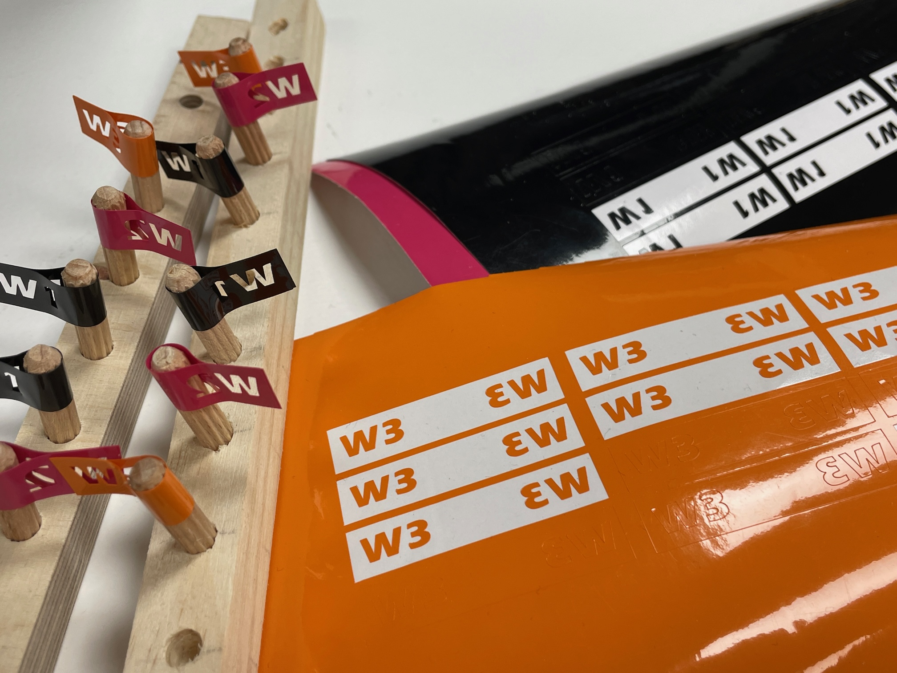

Photobioreactor
This microchallenge took place the week before design dialogues. Because of our common interests in bioremediation and living species, Puala Bustos, Paula Del Rio Arteaga, Pippa Formosa and I decided to make a photobioreactor. Information about how the project was developed can be found here. The photobioreactor is simply a device that allows for growth of a living environment to exist that needs light to be able to photosynthesize. We had been talking about making one for a while, and had been doing research on algaes and how photobioreactors would work. It was quite difficult at first to be able to find previous resources and examples of projects that were documented, but after talking with the Fab Lab team we were able to source some.

The biggest challenge, and also part that I enjoyed the most during this challenge was the design. We were encouraged to create something with aesthetic interest, since this PBR was intended to be used with the public. We wanted to make something approachable and interesting to make it engaging and appealing. With this, we came up with a vertical design, with suspended bottles and a network of tubing. Figuring out how all the pieces would come together took a while to wrap our heads around. Understanding how the different pumps would work together and between the bottles made me very confused at times. It seemed like there were so many different pieces that needed to come together. I hadn’t worked in a group of four before for the the challenges and so it did take a lot of communication between our team to be able to understand what we needed to do. However, I feel we divided and conquered well.
During this challenge, I felt like it was go go go and I was constantly switching between tasks of researching the PBR system, designing, fabricating, and physically using saws, sanders, and drills (which did make the challenge quite exciting but also tiring). We presented the photobioreactor at design dialogues and given the response, I would say that it did its job well. Many visitors approached me to ask about it and I enjoyed discussing it with them from the process of making it to what function it serves. It was really satisfying to be able to display it at design dialogues so soon after we had finished it. One thing I would have changed on it is the stability of the structure, it is a bit unwieldy and I don’t feel so secure about the joinery. I feel as though each of us was motivated to work on this micro challenge, so it was successful in that regard.